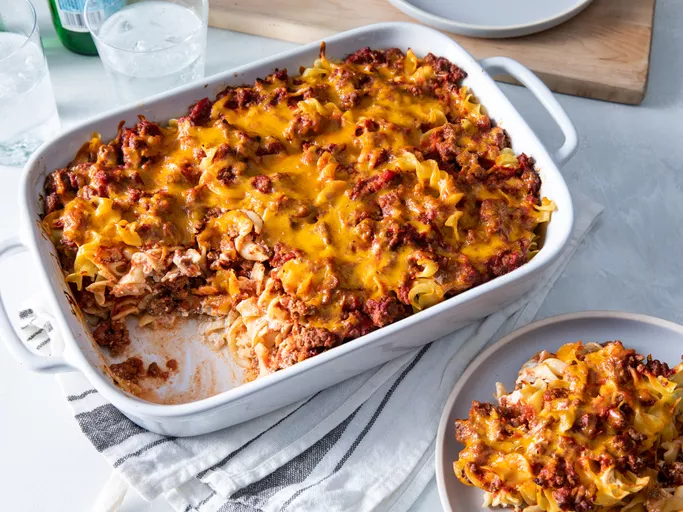

Grandma’s Hamburger Casserole

Description
This is a classic comfort food recipe that's perfect for Thanksgiving dinners.
Ingredients
- 1 pound ground beef
- 1 chopped onion
- 2 cloves minced garlic
- 1 can diced tomatoes
- 1 can tomato sauce
- 2 cups cooked pasta
- Shredded cheese for topping
Steps
- Preheat your oven to 350°F (175°C).
- In a large skillet, cook 1 pound of ground beef over medium heat until browned. Drain excess fat.
- Add 1 chopped onion and 2 cloves of minced garlic to the skillet. Cook until the onion is translucent.
- Stir in 1 can of diced tomatoes, 1 can of tomato sauce, and season with salt, pepper, and your favorite herbs.
- In a separate bowl, mix 2 cups of cooked pasta with the beef mixture.
- Transfer the mixture to a greased casserole dish and top with shredded cheese.
- Bake in the preheated oven for 25-30 minutes, or until the cheese is melted and bubbly.
- Let it cool for a few minutes before serving. Enjoy!
Back to Odin Recipes